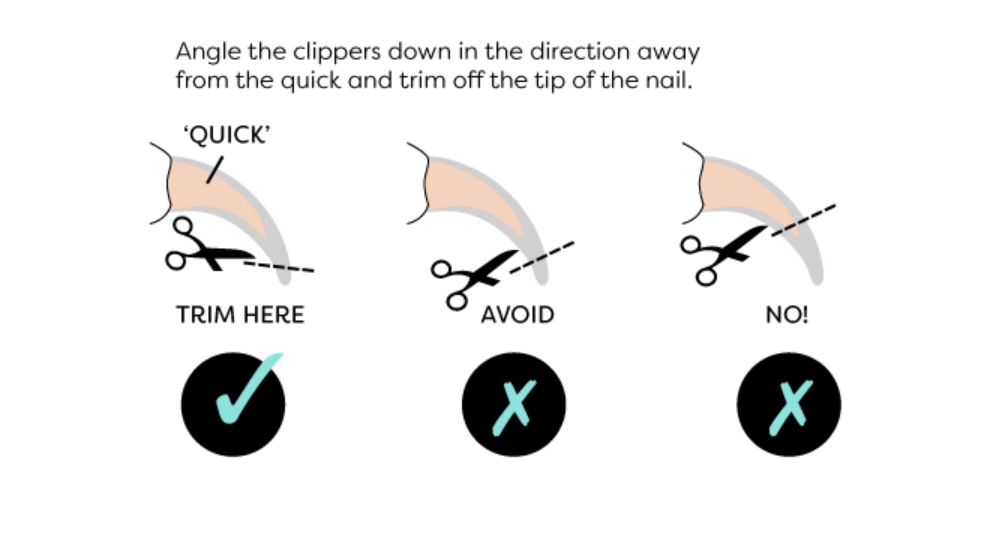

Grooming Your Cat
Regular grooming is essential for maintaining your cat's health and comfort. It helps remove loose fur, prevents matting in longer coats, and can even reduce hairballs. There are multiple different tools and techniques you can ues to groom your cat, and the best approach will depend on your cat's coat type and individual preferences.
Brushing & Combing
For short-haired cats, a rubber brush or grooming glove can be more than sufficient to remove loose fur and keep their coat lookings sleek. My cat has short fur and I use the Kong Zoom Groom brush on him, and it works wonders! For medium to long-haired cats, you might need to put in a little more effort. Cats like this may have a sleek top coat but a dense undercoat so while their coat may look nice, it can be prone to matting and tangling. Matting can be very uncomfortable for your cat, as it can cut off circulation, cause skin irritation, and trap moisture and dirt again the skin. To prevent matting, it's important to brush your cat regular and use the right tools. Or, if you have the money and train your cat to tolerate it from a young age, you can take them to a professional groomer every few months to get a brush and trim.
A good tool to use is for medium-hair to longhair cats is a slicker brush. This would be considered a more "every day" tool. It has fine wire bristles that grab loose fur from the topcoat and break up any small tangles before they become mats. It's important to be gentle when using a slicker brush, as the bristles can be sharp and may cause discomfort if used too aggressively. Some tools that are marketed for long-haired cats, such as the Furminator, can be too harsh and may cause skin irritation if used too frequently. If you do choose to use a tool like the Furminator, it's important to use it sparingly. The undercoat rake is another tool that can be used for cats with dense undercoats. It has long, widely spaced teeth that can reach through the topcoat to remove loose fur from the undercoat. This can be especially helpful during shedding season when your cat is losing a lot of fur. Again, it's important to be gentle when using an undercoat rake, as it can cause discomfort if used too aggressively. If your cat has a very thick coat you may want to consider using a dematting tool or a metal comb to help break up any mats that have already formed. These tools can be effective at removing mats, but they can also be uncomfortable for your cat if used incorrectly. If you do find that your cat's fur has become mattd and you are unable to remove it with regular brushing and combing, it's important to seek help from a professional groomer or your veterinarian as they might need to be shaved to prevent further discomfort and skin issues.
Grooming Tool Comparison
| Tool Type: | Best For: | Maintenance Level: |
|---|---|---|
| Slicker Brush | Removing loose fur & tangles | Daily (high) |
| Undercoat Rake | Deep shedding & thick coats | Weekly (medium) |
| Metal Comb | Checking for hidden mats | Finishing (low) |
The Great Nail Trim
his tends to be one of the mosst dreaded grooming tasks for cat owners, but it's an important one to keep your cat comfortable and prevent damage to your furniture. It's not necessarily something that is needed on a regular basis or at all, as some cats are able to keep their nails worn down through regular scratching on appropriate surfaces. Sometimes, when their nails get too long, they fall off on their own every 2 or 3 months. However, if you do want to try trimming your cat's nails, it's important to get them used to the process from a young age if you get a kitten and to be patient and gentle. You can use a pair of nail clippers designed for cats, they usually look like a small pair of scissors with a curved blade. When trimming your cat's nails, it's important to avoid cutting into the quick, which is the pink part of the nail that contains blood vessels and nerves. If you've ever accidentally cut your own nail too short, you know how painful it can be! If you do accidentally cut into the quick, it's important to apply styptic powder or cornstarch to stop the bleeding and prevent infection.

This image shows the quick and where to trim your cat's nails. Make sure to only trim the white tip.
Warning: Absolutely DO NOT DECLAW YOUR CAT! This is not just a simple trim, it is a permanent and painful surgery involving the amputation of the last bone of each toe. It causes chronic pain, may cause walking abnormalities, and long-term health issues like arthritis. Your furniture, or anything in your household for that matter, is not worth the pain and suffering you would cause your cat if you chose to declaw them.
Dental Care
This is also a fairly dreaded and often overlooked step in grooming care for cats. However, it's incredibly important as poor oral hygiene can lead to heart and kidney issues down the road. You might ask, how does poor oral hygiene lead to heart and kidney issues? Great question! Dental disease does not remain confined to the mouth. If bacteria reaches a certain level, it can enter the bloodstream and travel to distant organs (such as heart and kidneys). This process can occur every time a pet chews, eats, or licks. About 70% - 80% of cats show signs of dental disease by age three! If your cat develops plaque, it can harden into tartar within 24 - 48 hours. If you see that your cat shows any signs of dental pain, such as bad breath (and I mean BAD) or dropping food when eating, you should consult with your vet to see what the issue is and what your next steps are.
Anyways, onto the dental care. The biggest hurdle in dental care is getting your cat to cooperate. If you adopt a kitten, it's important to get them used to dental care when they are young, and be PATIENT! Be sure to use an animal-specific toothpaste! Human toothpaste is toxic because of the fluoride and xylitol. Animal toothpaste typically comes in flavors like poultry or seafood that can make it more "treat" tasting. Now when you start, don't just go in and stick the brush into their mouth. Introduce the toothpaste first by letting them lick it off your finger and then slowly introduce a finger brush. You can find these at Target or other similar stores, and it's essentially a silicone cover for your finger with little silicone bristles to brush your cat's teeth. Now, if you're trying this with an older cat, they might be quite difficult so again, take it slow and be patient. However, if you find that your cat just isn't taking to the brush at all, don't force them. Dental treats and water additives are some good alternatives for dental toothbrushes. If you do decide to use water additives, make sure your cat is already getting a good water intake since they might not be very receptive to you switching up their water. If you see that they stop drinking their water after adding a water additive, take it out immediately and just give your cat dental treats. Something is better than nothing at the end of the day. Make sure any dental product you use on your cat has the VOHC (Veterinary Oral Health Council) seal as they are clinically proven to reduce plaque.
To Bathe or Not to Bathe?
There seems to be some common misconception that cat's need to be bathed every now and again in order to keep them clean. While for some messy cats this may rein true, most the time it is completely unnecessary. Cat's are, quite literally, self-cleaning machines. Cat's papillae (humans papillae are just tongue bumps) are small, backward-facing, U-shaped spines on a cat's tongue made of keratin. If you've gotten licked by a cat, you'd know it kind of feels like sandpaper. Their tongue serves critical functions: grooming, cleaning fur down to the skin, and removing meat from bones. Cat's can spend up to 30% - 50% of their waking hours grooming themselves. Now, as I stated earlier, there are certain situations where cat's may need a bath. If they have a messy incident or get into something they shouldn't lick off like oil or paint then understandably they are going to need a bath. Sometimes cats may have a skin condition or flea infestations that may require a medicated bath from either you or a vet. On occasion, there might be physical limitations as well such as a senior cat or a larger, more fat cat that can't reach certain spots. However, for senior cats, it may just be best to try and bathe them in a less stressful way like using a warm washcloth.
If you find yourself in a scenario where you need to bathe your cat, here are some tips. Preparation is everything. More than likely your cat is not going to like water and will fight you. Have a towel ready, as well as some soap. You may find it helpful to put a towel on the floor of the tub to prevent the cat from slipping and possibly freaking out, as well as prefilling the tub with water as the intense running water may cause panic and cause them to try and jump out the tub. Use lukewarm water since cats have a higher body temperature than us, so what may feel "hot" to us is more than likely way too hot for them. Make sure that you use an animal safe shampoo and never use human shampoo or dawn soap (unless trying to clean oil off fur) as it can strip a cat's natural skin oils.